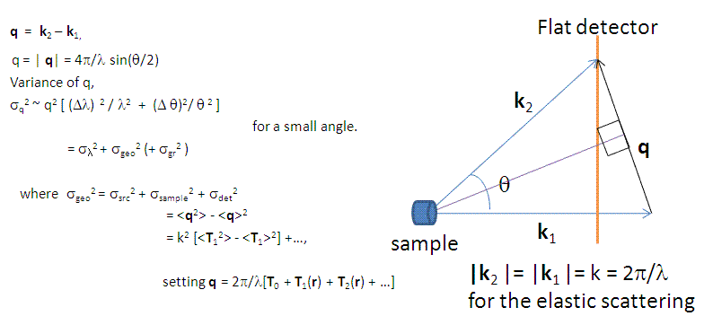
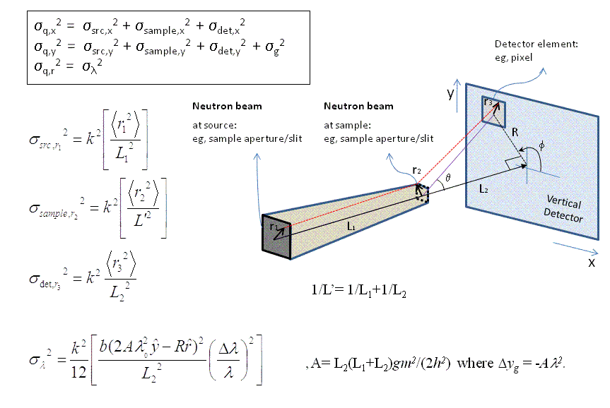
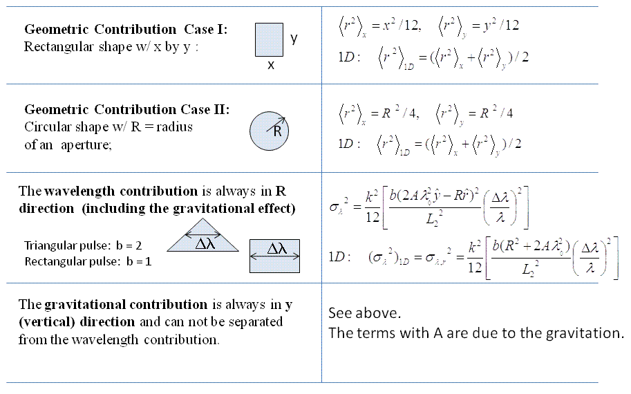

Q Resolution Estimator Tool
Description
This tool is approximately estimates the resolution of Q from SAS instrumental parameter values assuming that the detector is flat and normal to the incident beam.
Using the tool
Select SAS Resolution Estimator from the Tool menu on the SasView toolbar.
Select the source (Neutron or Photon) and source type (Monochromatic or TOF).
NOTE! The computational difference between the sources is only the gravitational contribution due to the mass of the particles.
Change the default values of the instrumental parameters as required. Be careful to note that distances are specified in cm!
Enter values for the source wavelength(s), λ, and its spread (= FWHM/λ).
For monochromatic sources, the inputs are just one value. For TOF sources, the minimum and maximum values should be separated by a ‘-‘ to specify a range.
Optionally, the wavelength (BUT NOT of the wavelength spread) can be extended by adding ‘; nn’ where the ‘nn’ specifies the number of the bins for the numerical integration. The default value is nn = 10. The same number of bins will be used for the corresponding wavelength spread.
For TOF, the default wavelength spectrum is flat. A custom spectral distribution file (2-column text: wavelength (Å) vs Intensity) can also be loaded by selecting Add new in the combo box.
When ready, click the Compute button. Depending on the computation the calculation time will vary.
1D and 2D dQ values will be displayed at the bottom of the panel, and a 2D resolution weight distribution (a 2D elliptical Gaussian function) will also be displayed in the plot panel even if the Q inputs are outside of the detector limit (the red lines indicate the limits of the detector).
TOF only: green lines indicate the limits of the maximum Q range accessible for the longest wavelength due to the size of the detector.
Note that the effect from the beam block/stop is ignored, so in the small Q region near the beam block/stop
[ie., Q < 2. π.(beam block diameter) / (sample-to-detector distance) / λ_min]
the variance is slightly under estimated.
A summary of the calculation is written to the SasView Console at the bottom of the main SasView window.
Theory
The scattering wave transfer vector is by definition
In the small-angle limit, the variance of Q is to a first-order approximation
The geometric and gravitational contributions can then be summarised as
Finally, a Gaussian function is used to describe the 2D weighting distribution of the uncertainty in Q.
References
D.F.R. Mildner and J.M. Carpenter J. Appl. Cryst. 17 (1984) 249-256
D.F.R. Mildner, J.M. Carpenter and D.L. Worcester J. Appl. Cryst. 19 (1986) 311-319
Note
This help document was last changed by Steve King, 01May2015